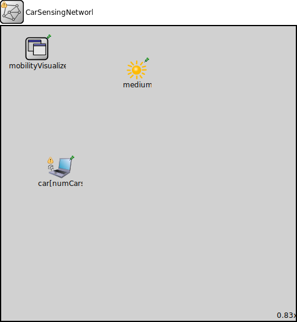

Package: pecsn_project_tess.simulations
CarSensingNetwork2
network(no description)
Usage diagram
The following diagram shows usage relationships between types. Unresolved types are missing from the diagram.
Parameters
| Name | Type | Default value | Description |
|---|---|---|---|
| numCars | int | 10 |
Define the number of cars |
| minCoordValue | int | 0m |
the min coordinate value |
| maxCoordValue | int | 100m |
the max coordinate value |
Properties
| Name | Value | Description |
|---|---|---|
| isNetwork | ||
| display | bgb=600,600 |
Unassigned submodule parameters
| Name | Type | Default value | Description |
|---|---|---|---|
| medium.neighborCache.refillPeriod | double | ||
| car.status.initialStatus | string | "UP" |
TODO @signal, @statistic |
| car.pcapRecorder.verbose | bool | true |
whether to log packets on the module output |
| car.pcapRecorder.pcapFile | string | "" |
the PCAP file to be written |
| car.pcapRecorder.fileFormat | string | "pcapng" | |
| car.pcapRecorder.snaplen | int | 65535 |
maximum number of bytes to record per packet |
| car.pcapRecorder.dumpBadFrames | bool | true |
enable dump of frames with hasBitError |
| car.pcapRecorder.moduleNamePatterns | string | "wlan[*] eth[*] ppp[*]" |
space-separated list of sibling module names to listen on |
| car.pcapRecorder.sendingSignalNames | string | "packetSentToLower" |
space-separated list of outbound packet signals to subscribe to |
| car.pcapRecorder.receivingSignalNames | string | "packetReceivedFromLower" |
space-separated list of inbound packet signals to subscribe to |
| car.pcapRecorder.dumpProtocols | string | "ethernetmac ppp ieee80211mac" |
space-separated list of protocol names as defined in the Protocol class |
| car.pcapRecorder.packetFilter | object | "*" |
which packets are considered, matches all packets by default |
| car.pcapRecorder.helpers | string | "" |
usable PcapRecorder::IHelper helpers for accept packettype and store/convert packet as specified linktype currently available: "inet::AckingMacToEthernetPcapRecorderHelper" |
| car.pcapRecorder.alwaysFlush | bool | false |
flush the pcapFile after each write to ensure that all packets are captured in case of a crash |
| car.pcapRecorder.displayStringTextFormat | string | "rec: %n pks" | |
| car.interfaceTable.displayAddresses | bool | false |
whether to display IP addresses on links |
| car.cb.displayStringTextFormat | string | "processed %p pk (%l)" |
determines the text that is written on top of the submodule |
| car.cb.forwardServiceRegistration | bool | true | |
| car.cb.forwardProtocolRegistration | bool | true | |
| car.bl.displayStringTextFormat | string | "processed %p pk (%l)" |
determines the text that is written on top of the submodule |
| car.bl.forwardServiceRegistration | bool | true | |
| car.bl.forwardProtocolRegistration | bool | true | |
| car.li.displayStringTextFormat | string | "processed %p pk (%l)" |
determines the text that is written on top of the submodule |
| car.li.forwardServiceRegistration | bool | true | |
| car.li.forwardProtocolRegistration | bool | true | |
| car.eth.bitrate | double | ||
| car.nl.displayStringTextFormat | string | "processed %p pk (%l)" |
determines the text that is written on top of the submodule |
| car.nl.forwardServiceRegistration | bool | true | |
| car.nl.forwardProtocolRegistration | bool | true | |
| car.tn.displayStringTextFormat | string | "processed %p pk (%l)" |
determines the text that is written on top of the submodule |
| car.tn.forwardServiceRegistration | bool | true | |
| car.tn.forwardProtocolRegistration | bool | true | |
| car.at.displayStringTextFormat | string | "processed %p pk (%l)" |
determines the text that is written on top of the submodule |
| car.at.forwardServiceRegistration | bool | true | |
| car.at.forwardProtocolRegistration | bool | true |
Source code
network CarSensingNetwork2 { parameters: int numCars = default(10); // Define the number of cars int minCoordValue @unit(m) = default(0m);// the min coordinate value int maxCoordValue @unit(m) = default(100m); // the max coordinate value @display("bgb=600,600"); submodules: // Get a radio medium for a wireless communication medium: Ieee80211ScalarRadioMedium { @display("p=275.424,88.184"); } // radioMedium: RadioMedium {@display("p=400.424,99.184"); } car[numCars]: WirelessHost { //A host from INET @display("p=119.591995,288.712"); // x mobility.constraintAreaMinX = parent.minCoordValue; mobility.constraintAreaMaxX = parent.maxCoordValue; // y mobility.constraintAreaMinY = parent.minCoordValue; mobility.constraintAreaMaxY = parent.maxCoordValue; // z mobility.constraintAreaMinZ = 0m; mobility.constraintAreaMaxZ = 0m; //Initials mobility.initialX = uniform(parent.minCoordValue, parent.maxCoordValue); mobility.initialY = uniform(parent.minCoordValue, parent.maxCoordValue); mobility.initialZ = 0m; // Set Z to 0 if the simulation is 2D // // mobility.initialX = min(parent.maxCoordValue, max(parent.minCoordValue, uniform(parent.minCoordValue, parent.maxCoordValue) + index * 10m)); // mobility.initialY = min(parent.maxCoordValue, max(parent.minCoordValue, uniform(parent.minCoordValue, parent.maxCoordValue) + index * 5m)); // Connect to the radio medium // submodules: // submodules: // customMobility: CustomMobility { // @display("p=50,50"); // } // wlan[0].radio.radioMediumModule = "CarSensingNetwork.medium"; // To connect wireless NIC to the radio medium } mobilityVisualizer: MobilityVisualizer { @display("p=73.687996,45.904"); } // No explicit need for connections since the wireless communication is handled by the radio medium }File: simulations/CarSensingNetwork2.ned
 This documentation is released under the Creative Commons license
This documentation is released under the Creative Commons license